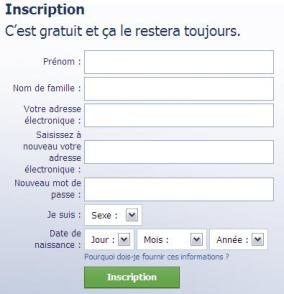

Introduction :
Jusqu'à présent, nous n'avons envisagé que la possibilité d'afficher des pages simples (contenant du texte et des images). HTML permet bien plus que le simple affichage de texte, d'images, de liens, ...
Un serveur HTML peut également récupérer des données introduites par l'utilisateur au travers de pages HTML affichées dans son navigateur.
Le remplissage des formulaires est généralement une tâche fastidieuse pour les utilisateurs, surtout s'il y a beaucoup d'informations à renseigner. Cela est encore plus vrai pour une personne en situation de handicap.
De plus, si le formulaire n'est pas correctement réalisé, il est possible qu'il ne soit pas du tout utilisable par certains utilisateurs.
Le fonctionnement d'un formulaire :
Le formulaire HTML permet de récupérer des informations que va saisir l'internaute sur une page HTML. L'internaute saisit ses informations soit en remplissant des champs texte (input, soit en sélectionnant un élément dans une liste déroulante (select) ou en sélectionnant une case à cocher (radio, checkbox). Une fois les informations saisies, l'internaute valide en cliquant sur un bouton de soumission (submit). Alors les informations sont transmises soit à une adresse e-mail (mailto) soit à un cgi (Common Gateway Interface), soit à une page dynamique de type php, node.js, asp, jsp...
Toutes les informations transmises lors de la soumission du formulaire sont rassemblées dans une requête, on parle de requêtes HTTP.
L'exemple ci-contre montre un formulaire d'inscription sur un site.
Écrire un formulaire :
Les prérequis :
Il est important d'indiquer à l'utilisateur les prérequis pour compléter un formulaire, en l'occurence les documents nécessaires (dernier avis d'imposition, pièces justificativess...) ou les logiciels ou l'équipement matériel indispensables (imprimante, par exemple). Cela évite qu'au bout du processus, l'utilisateur se rende compte qu'il ne peut pas le finaliser.
Les données nécessaires :
Il est également important de réfléchir à la pertinence des informations demandées à l'internaute via le formulaire. Cela va dans le sens du RGPD (Règlement Général sur la Proection des Données), qui indique que seules les informations nécessaires pour atteindre l'objectif doivet être collectées. Certaines questions peuvent provoquer de l'angoisse, de l'anxiété ou du stress. Soit il faut éviter de les poser; soit, si elles sont indispensables, il faut indiquer leur objectif et ne pas nécessairement rendre la réponse obligatoire. Par exemple, un formulaire demandant d'indiquer les revenus peut préciser que cela permet de rechercher d'éventuelles aides auxquelles la personne aurait droit et que ces informations ne seront pas enregistrées.
L'égalité femmes-hommes :
Contrairement à ce que nous pourrions penser, un formulaire peut être sexiste ! Le français ne nous aide pas pour ce qui est de la parité : en grammire, le masculin ne l'emporte-t-il pas sur le féminin ?! Dans un formulaire, il est possible, et souhaitable, de ne pas reproduire ce travers, même inconsciemment.
Tout d'abord l'ordre a de l'importance. Par exemple, pour saisir le sexe d'unepersonne, les choix devraient être dans l'ordre Féminin puis Masculin, ou Femme puis Homme, car cela respecte l'ordre alphabétique. Il est à noter que pour les titres(Madame, Monsieur), il ne faut pas proposer Mademoiselle (tout comme nous ne proposent pas Mondamoiseau) !
Remarque : Il existe également des personnes intersexuées (ne présentant pas les caractéristiques chromosomiques/hormonales/anatomiques ni du sexe féminin ni du sexe masculin). Il est alors légitime de se poser la question de proposer le genre neutre. À l'heure actuelle, la législation française ne reconnaît que féminin ou masculin comme sexe possible, malgré l'ajout du pronom "iel".
Ensuite, mieux vaut proposer les versions féminine et masculine (forme en doublet) des libellés affichés, en les ordonnant alphabétiquement, ou mieux encore utiliser des mots dont la graphie ne varie pas au féminin et au masculin (forme épicène). Par exemple, pour indiquer une profession :
- Auteur, Autrice
- Conférencier, Conférencière
- Développeur, Développeuse
- Graphiste
Les trois premières lignes sont des doublets et la quatrième est une forme épicène.
Remarque : Ces conseils peuvent sembler peu de choses, mais ils sont importants : ils contribuent à ce que chaque personne se sente légitime.
La modification possible :
Il est important que l'internaute ait la possibilité de modifier ses saisies ou ses choix précédents. Il ne faut pas que des champs soient désactivés après leur complétion. Des utilisateurs avec des déficiences cognitives ou motrices peuvent saisir des données erronnées, ils doivent pouvoir les corriger.
Un formulaire se définit par les balises <form>...</form>.
Tous les champs d'input du formulaire doivent se trouver à l'intérieur de cet élément entre les balises <form> et </form.
Cette balise requière deux attributs :
- action :
- spécifie l'adresse d'envoi des données introduites par l'utilisateur par exemple l'adresse d'une page web référençant un script (http://serveur/script.php) ou adresse e-mail (mailto:aftrddr.email@machine).
- method :
- indique la méthode d'envoi "post" ou "get.
<form action="URL/script" method="get">
Donnez votre accord en cochant la boîte ci-dessous et en soumettant votre réponse.<br/>
Oui, j'accepte cette proposition : <input type="checkbox" name="acceptation"><br>
<input type="submit" value="soumettre">Voici ce qu'affiche le browser :
Les requêtes get et post :
Le client adresse ses requêtes au serveur en précisant l'URL de la ressouce demandée, la version du protocole et un ensemble d'informations facultatives (browser utilisé, jeu de caractères, encoding, ...).
Le HTTP est donc un protocole qui reçoit plusieurs types de requêtes dont les deux principales sont : get et post.
Avec un post, le navigateur enpaquette les variables de la requête avant de l'envoyer au serveur alors que le get ajoute les variables à la fin de l'URL, dans la barre d'adresse du navigateur, au moment d'envoyer la requête au serveyr. en bref, avec post, les données sont envoyées dans la requête de façon invisible tandis qu'avec get, les données sont ajoutées à l'URL à la vue de l'internaute.
| GET | POST |
|---|---|
| Les variables sont ajoutées à la fin de l'URL dans la barre d'adresse du navigateur. | Les variables sont invisibles pour l'utilisateur car elles sont empaquetées. |
| Les requêtes get sont limitées à x caractères (souvent 1024, soit 2^10). | Les requêtes post de longueur illimitée. |
| On peut placer des signets (des marque-pages) sur des pages générées par des get. | Il est impossible de mettre un signet pour une page générée par un post. |
| On utilise la méthode get pour laisser la possibilité à l'utilisateur d'accéder à la page générée via un signet (sans retur préalable au formulaire), pour des petits paquets, ... | On utilise la méthode post pour des données confidentielles, pour des gros paquets, ... |

En tant que programmeur, vous devrez choisir dans vos formulaires entre la méthode GET ou POST. Il est donc essentiel de bien connaître et comprendre les différences entre ces deux méthodes.
Abordons maintenant le contenu d'un formulaire.
Les input :
L'élément input permet d'introduire dans une page HTML différents types d'entrée qui offrent, à l'utilisateur, différents moyens d'encoder des données. Dans cet élément, on peut préciser différents attributs :
- type qui permet de définir le type d'input : text, password, checkbox, ...
- name; voir ci-dessous.
- value qui précise la valeur de l'attribut précisé dans name.
- size qui spécifie la taille de la zone (en caractères pour les zones contenant des caractères), sinon en pixels.
- maxlength qui spécifie la taille maximale de la zone (en caractères).
- checked qui préselectionne (pour les radio et les checkbox) l'élément si la valeur d'attribut vaut checked.
- placeholder qui permet d'afficher un exemple de valeur. Attention à ne pas utiliser l'attribut placeholder à la place d'un label. Cela pose des problèmes d'accessibilité à plusieurs types d'internautes. La couleur par défaut du texte de l'attribut placeholder n'est pas suffisamment contrastée, mais il est difficile de la contraster plus, car elle risque d'être confondue avec une valeur saisie. Le second problème est que le texte inscrit dans le champ via l'attribut placeholder disparaît dès le premier caractère saisi. Ainsi, les utilisateurs ayant des troubles de l'attention peuvent ne pas savoir ce qu'ils doivent saisir. Enfin, cela ne facilite pas la relecture une fois le formulaire complété.
- required qui permet d'indiquer qu'un champ est obligatoire.
- tabindex qui permet d'indiquer un ordre de tabulation.
- accesskey qui permet de créer un raccourci clavier.
L'attribut name :
L'attribut name spécifiele nom de l'attribut dans la requête. Ce nom doit être significatif; il ne comportera ni virgule, ni accent, ni espace, ...
Quand on soumet le formulaire, la requête est envoyé avec les différents attributs du formulaire. Ces attributs correspondent aux input du formulaire. Ils sont transmis comme liste nom=valeur (name=value).
Par exemple, dans un formualire, j'ai :
- un input dont le name est login.
- un input dont le name est password.
Si l'utilisateur entre les valeurs de login "toto" et de password "super" et soumet le formulaire, alors la requête contiendra les informations suivantes :
login=toto
password=super
Les différents types d'input :
- text :
-
propose à l'utilisateur d'introduire une ligne de texte.
En HTML :
<input type="text" value="exemple de capture de ligne name="exemple_text" size="50"> - password :
-
propose à l'utilisateur d'introduire une ligne de texte dissimulé, par exemple un mot de passe (les caractères introduits par l'utilisateur sont remplacés par des "*").
En HTML :
<input type="text" name="exemple_password" placeholder="Entrez un mot de passe" size="8"/> - checkbox :
-
propose des cases à cocher, l'utilisateur peut choisir ou non la valeur proposée; ce type d'élément permet de choisir plusieurs options comme dans l'exemple suivant :
Marquez votre choix choix 1 :
choix 2 :
choix 3 :En HTML :
Marquez votre choix :
choix 1 : <input type="checkbox" name="choix[] value="choix1"> choix 2 : <input type="checkbox" name="choix[]" value="choix2"> choix 3 : <input type="checkbox" name="choix[]" value="choix3"> - boutons multiples (radio button) :
-
propose un bouton d'option, la valeur est envoyée si le bouton est sélectionné.
Si plusieurs boutons sont rassemblés sous le même nom (le même attribut name), le choix de l'utilisateur est exclusif pour faire en sorte de ne sélectionner qu'un seul d'entre eux.
Une personne utilisant un lecteur d'écran est informée de la manière suivante :
- Oui bouton radio bouton non coché (1 sur 2)
- Non bouton radio bouton non coché (2 sur sur 2)
Ainsi, elle sait qu'elle doit répondre soit oui soit non. En utilisant les balises <fieldset> et <legend> (voir plus bas), l'utilisateur avec un lecteur d'écran sait à quelle question il répond.
Marquez votre choix : choix 1 :
choix 2 :
choix 3 :En HTML :
Marquez votre choix :
choix 1 : <input type="radio" name="choix" value="choix1"> choix 2 : <input type="radio" name="choix" value="choix2"> choix 3 : <input type="radio" name="choix" value="choix3"> - submit :
-
propose un bouton de soumission des données :
En HTML :
<input type="submit" value="soumettre"> - reset :
-
propose un bouton de rétablissement (effacer le contenu des différents champs et les remplacer par les valeurs par défaut).
En HTML :
input type="reset" value="abandon"> - file :
-
propose à l'utilisateur d'intriduire l'emplacement d'un fichier.
En HTML :
<form action="URL/script" method="post" enctype="multipart/form-data> <input type="file" name="un_fichier> <input type="hidden" name="MAX_FILE_SIZE" value="100000">
Remarquez que pour envoyer un fichier un champ caché (hidden) doit être spécifié.
Celui-ci indique la taille maximale du fichier qui pourra être envoyé.
Remarquez également l'ajout du paramètre enctype="multipart/form*data" dans la balise form.
L'attribut accept prend comme valeur une liste séparée par des virgules d'un ou plusieurs types de fichiers, ou d'une spécification de type de fichiers à autoriser. Comme un type de fichier donné peut être identifié de plusieurs manières, il est utile de fournir un ensemble complet de spécificateurs de type lorsque vous avez besoin de fichiers d'un type spécifique, ou d'utiliser le joker pour indiquer qu'un type de n'importe quel format est accepté.
Par exemple, il existe un certain nombre de façons d'identifier les fichiers Microsoft Word, de sorte qu'un site qui accepte les fichiers Word pourrait utiliser un <input> comme celui-ci :
<input type="file" id="docpicker" accept=".doc, .docx, application/msword, application/vnd.openxmlformats-officedocument.wordprocessingml.document">En revanche, si vous acceptez un fichier multimédia, vous pouvez inclure tout format de ce type de média :
<input type="file" id="soundFile" accept="audio/*"> <input type="file" id="videoFile" accept="video/"> <input type="file" id="imageFile" accept="image/*">L'attribut accept ne valide pas les types de fichiers sélectionnés; il fournit des indications aux navigateurs pour guider les utilisateurs vers la sélection des bons types de fichiers. Il est toujours possible (dans la plupart des cas) pour les utilisateurs de basculer une option dans le sélecteur de fichiers qui permet de passer outre et de sélectionner le fichier de leur choix, puis de choisir des types de fichiers incorrects.
Pour cette raison, vous devez vous assurer que les exigences attendues sont validées côté serveur.
L'attribut booléen multiple, s'il est défini, signifie que le contrôle de formulaire accepte une ou plusieurs valeurs.
-
propose un champs caché pour forcer une valeur.
En HTML :
<input type="hidden name="exemple_hidden"> - image :
-
propose un bouton illustré.
En HTML :
<input type="image" src="../images/bouton.jpg" name="exemple_buton" alt="bouton image"> - email :
-
Il s'agit d'une nouveauté HTML5 permettant d'entrer une adresse email. Toujours dans cette idée de sémantique, il est conseillé d'utiliser ce champ pour les adresses e-mails de formulaires car ça force la présence d'un @ dans le texte.

Cet élément possède un attribut pattern utilse pour renseigner une expression régulière. Ceci aura pour effet d'avertir l'utilisateur si son adresse e-mail ne correspond pas à l'expression régulière. Voivi un lien vers plus d'informations sur les expressions régulières. Vous aurez l'occassion d'approfondir ce sujet au cours de vos études.
Entrez un email :
En HTML :
<input type="email" pattern="(^[a-z0-9]+)@([a-z0-9])+(\.)([a-z]{2,4})" name="exemple_email"> - tel :
-
Il s'agit d'une nouveauté HTML5 permettant d'entrer un numéro de téléphone. Toujours dans cette idée de sémantique, il est conseillé d'utiliser ce champ pour les nuémros de téléphone dans les formulaires.
Cet élément possède un attribut pattern utile pour renseigner une expression régulière. Ceci aura pour effet d'avertir l'utilisateur si son numéro de téléphone ne correspond pas à l'expression régulière. Voici un lien vers plus d'informations sur les expressions régulières. Vous aurez l'occassion d'approfondir ce sujet au cours de vos études.
Entrez un tel :
En HTML :
<input type="tel " pattern="^0[0-9]{9}" placeholder="Entrez votre numéro de téléphone" name="exemple_tel"> - date, datetime, time, week, month :
-
Il s'agit d'une nouveauté HTML5 permettant d'entrer une date et/ou une heure. Toujours dans cette idée de sémantique, il est conseillé d'utiliser ce champ pour les dates et temps dans les formulaires. Regardez les attributs min et max, ainsi que step dans l'exemple suivant. Le navigateur affichera un calendrier pour sélectionner la date. Dans cet exemple, les dates valides seront tous les 7 jours à partir du 15/09/2014, à savoir tous les lundis.
Entrez une date :
En HTML :
<input type="date" name="date" min="2014-09-15" max="2020-09-15" step="7"> - color :
-
Il s'agit d'une nouveauté HTML5 permettant d'entrer une couleur.
Une couleur préfére ? :
En HTML :
<input type="color" name="color"> - search :
-
Il s'agit d'une nouveauté HTML5 permettant d'entrer un texte/mot-clé à rechercher. Toujours dans cette idée de sémantique, il est conseillé d'utiliser ce champ pour les champs de recherches dans les formulaires.
Une recherche ? :
En HTML :
<input type="search" name="search">Le moteur de recherche est un moyen alternatif pour accéder à une page du site. Il faut faire attention que toutes les pages soient indexées pour que le moteur de recherche soit efficace. Cette solution est à privilégier pour les sites de taille importante. Si cette solution est retenue, il est souhaitable d'intégrer le moteur de recherche dans le modèle de page. Ainsi, il est toujours positionné au même endroit et accessible de n'importe quelle page.
Pour indiquer que le moteur de recherche n'est pas un formulaire comme les autres, il est important de lui affecter le rôle ARIA search.
<div role="search"> <form method="GET" action="..."> <input type="search" placeholder="Recherche"> <input type="submit"value="Rechercher"> </form> </div>Attention, à ne pas positionner l'attribut ARIA role="search" sur la balise <form>, car celle-ci a déjà le rôle form. Cela aura pour conséquence d'écraser celui-ci, ce qui n'est pas souhaitable.. C'est pourquoi cela a été fait dans une balise <div> englobante.
Les champs de type textarea :
La balise <textarea>...</textarea> permet à l'utilisateur d'introduire un texte sur plusieurs lignes.
Plusieurs attribus définissent cette balise :
- cols :
- détermine le nombre de caractères par ligne.
- rows :
- définit le nombre de lignes de la zone.
- disable :
- grise et fige la zone, permet d'introduire du texte qui ne peut pas être modifié.
- readonly :
- fige la zone.
Par exemple, voici l'apparence d'une textarea :
En HTML :
<textarea name="commentaire" cols="50" rows="10">Donnez votre commentaire.</textarea>Les menus déroulants :
La balise <select>...</select> permet de créer un menu déroulant à l'intérieur d'un formulaire.
Par exemple :
Quelle couleur préférez-vous ?
En HTML :
<select name="couleur" size="3">
<option value="blanc">Blanc</option>
<option value="noir">Noir</option>
<option value="rouge">Rouge</option>
<option value="bleu">Bleu</option>
<option value="brun">Brun</option>
<option value="jaune" selected="selected">Jaune</option>
<option value="orange">Orange</option>
<option value="parme">Parme</option>
</select>La balise <select> ouvre la définition du menu, les balises <option> spécifient les propositions contenues dans le menu et la balise </select> termine le menu.
fieldset, legend et label :
- fieldset :
-
La balise fieldset permet de regrouper plusieurs éléments du formulaire. Elle crée un contour autour des balises de formulaires qu'elle entoure.
Pour que l'internaute puisse connaître la question à laquelle il doit répondre, il faut qu'elle soit liée aux cases à cocher et/ou aux boutons radio, sinon elle ne sera pas lue par le lecteur d'écran. Pour cela, il est nécessaire que les cases à cocher et/ou les boutons radio soient regroupés au sein d'une balise <fieldset> et que la question soit indiquée via la balise <legend>.
En HTML :
<fieldset> <p>Nom : <input type="text" name="nom"></p> <p>Prénom : <input type="text" name="prenom"></p> <fieldset> - legend :
-
La balise legend permet d'afficher un titre au cadre d'un fieldset.
En HTML :
<fieldset> <legend>Identité</legend> <p>Nom : <input type="text" name="nom"></p> <p>Prénom : <input type="text" name="prenom"></p> <fieldset>Les balises <fieldset> et <legend> ne sont pas faciles à styliser avec des règles CSS. Il est possible d'utiliser l'attribut ARIA role="group" sur une autre balise afin qu'elle joue le même rôle que <fieldset>. Cette balise qui englobe les éléments à regrouper doit posséder un attribut role="group" et qu'elle possède un attribut aria-labelledby ayant pour valeur celle de l'attribut id de la balise contenant la légende du groupe.
Exemple :
<div class="card" role="group" aria-labelledby="competences"> <div class="card-header" id="competences"> Quels sont vos domaines de compétence ?php </div> <input type="checkbox" name="html" id="html"> <label for="html">HTML</label> <input type="checkbox" name="css" id="css"> <label for="css">CSS</label> </div>La restitutionn par NVDA sera lue de la manière suivante :
- Quels sont vos domaines de compétence (Groupe)
- HTML case à cocher non cochée
- CSS case à cocher non cochée
- label :
-
La méthode pour associer un libellé à un champ la plus couramment utilisée est d'associer une balise <label> au champ de saisie pour que l'utilisateur sache ce qu'il doit saisir. Cette association permet d'obtenir la lecture du label lorsque l'utilisateur arrive dans le champ. La balise label permet lorsque l'on clique sur son texte de donner le focus à un champ de formulaire.
Nom :
Prénom :
En HTML :
<p><label for="prenom">Direct sur le prénom</label></p> <p>Nom : <input type="text" name="nom" id="nom"></p> <p>Prénom : <input type="text" name="prenom" id="prenom></p>Lorsque l'internaute arrive sur le deuxième champ de saisie (cette balise <input>).NVDA lit : "direct sur le prénom édition autocomplétion vide". L'utilisateur sait donc qu'il doit saisir son prénom.
Il est également possible d'utiliser l'un des attributs aria-labelledby, aria-label ou title pour obtenir cette lecture.
Dans le cas de l'utilisation des attributs aria-label ou title, il faut faire attention que leur valeur reprenne le texte affiché afin qu'un utilisateur en commande vocale puisse accéder au champ avec le nom affiché à l'écran.
Remarque : l'inconvénient de ces techniques par rapport à l'utilisation d'un label est que le label n'est pas cliquable. En particulier, pour les cases à cocher et les boutons radio, cela réduit la zone cliquable, ce qui est problématique pour des utilisateurs rencontrant des difficultés à cliquer dans une petite zone. Il faut donc privilégier l'utilisation d'un label.
Si une autre information n'est pas présente dans le label, une unité par exemple, il est nécessaire de l'associer au champ, sans quoi elle ne sera pas lue. Pour cela, il est possible d'utiliser l'attribut aria-describedby.
Exemple :
<label for="taille">Taille</label> <input id="taille" type="text" name="taille" aria-describedby="uniteTaille"> <span id="uniteTaille>cm</span>Ainsi, lors de l'arrivée dans ce champ, NVDA lit : "taille édition autocomplétion cm vide".
Remarque: le problème de cette solution, c'est que les messages d'erreur sont également associés au champ en erreur avec cet attribut.
Les internautes utilisant un lecteur d'écran sont dans une situation particulière lorsqu'ils complètent un formulaire. Les raccourcis sont temporairement désactivés pour permettre la saisie de texte dans les champs. Contrairementà leur habitude, ils se déplacent avec la touche [Tab]. Le texte positionné à côté des champs n'est pas lu, à moins d'être associé au champ de saisie.
La mise en page d'un formulaire :
Étant donné que les formulaires ont une allure tabulaire, on utlise souvent les table pour mettre en forme plus facilement ces formulaires. Mais ceci amène souvent plus de lourdeur dans le fichier HTML puisque des balises sont ajoutées. Ceci est la seule exception notoire où on utilise un composant HTML (table) pour effectuer de la mise en forme.
L'aide à la saisie :
Pour une personne ayant des troubles de l'attention ou une déficience intellectuelle, la complétion d'un formulaire peut être compliquée. Aussi, il est important d'aider l'utilisateur dans cette tâche.
L'abence de saisies multiples :
Une première possibilité pour assister l'utilisateur est de lui éviter de saisir plusieurs fois les mêmes informations. Par exemple, s'il est nécessaire de fournir une adresse de livraison et une adresse de facturation, il est possible, après la saisie de la première, de cocher une case pour indiquer que la deuxième est identique. Ainsi, l'utilisateur n'aura à saisir à la seconde adresse que si elle est différente de la première.
Exemple :
<fieldset>
<legend>Adresse de livraison</legend>
<label for="adresseLivraison">Adresse</label>
<input type="text" name="livraison[adresse]" id="adresseLivraison">
<label for="adresseComplementLivraison">Complément d'adresse</label>
<input type="text" name="livraison[adresseComplement]" id="adresseComplementLivraison">
<label for="cpLivraison">Code postal</label>
<input type="text" name="livraison[cp]" id="cpLivraison">
<label for="villeLivraison">Ville</label>
<input type="text" name="livraison[ville]" id="villeLivraison">
</fieldset>
<fieldset>
<legend>Adresse de facturation</legend>
<input type="checkbox" name="memeAdressePourFacturation" id="memeAdresse">
<label for="memeAdresse">Utiliser la même adresse</label>
<div>
<label for="adresseFacturation">Adresse</label>
<input type="text" name="facturation[adresse]" id="adresseFacturation">
<label for="adresseComplementFacturation">Complément d'adresse</label>
<input type="text" name="facturation[adreseComplement]" id="adresseComplementFacturation">
<label for="cpFacturation">Code postal</label>
<input type="text" name="facturation[cp]" id="cpFacturation">
<label for="villeFacturation">Ville</label>
<input type="text" name="facturation[ville]" id="villeFacturation">
</div>
</fieldset>Le fichier JavaScript :
window.onload = init;
let bMemeAdresse;
function init() {
bMemeAdresse = document.getElementById('memeAdresse');
bMemeAdresse.onchange = memeAdresse;
}
function memeAdresse() {
let display = bMemeAdresse.checked ? 'none' : 'initial';
let div = bMemeAdresse.nextElementSibling.nextElementSibling;
div.style.display = display;
}
Lorsque l'utilisateur coche Utiliser la même adresse, les champs et labels situés après cette case à cocher sont cachés. Lorsque l'utilisateur décoche la case, ils sont de nouveau affichés.
Remarque : Les champs et labels associés qui doivent être cachés ou réaffichés sont regroupés dans une balise <div>. Cela permet de n'effectuer l'opération qu'une seule fois pour l'ensemble plutôt que de le faire pour chaquechamp et chaque label. Cela est plus efficace.
La sélection dans une liste à la place de la saisie :
Une seconde possibilité pour aider l'utilisateur à compléter le formulaire est de proposer des valeurs en fonction deréponses précédentes. Cela peut se faire par différents moyens : un script JavaScript avec ou sans appel AJAX au serveur ou à une API. Il est par exemple possible de préremlir la ville en fonction du code postal ou de proposer de choisir parmi une liste de villes.
Dans l'exemple, qui suit, nous utilisons en ce sens l'API APICarto - codes-postaux proposée par l'IGN.
<fieldset>
<legend>Adresse de livraison</legend>
<label for="adresseLivraison">Adresse</label>
<input type="text" name="livraison[adresse]" id="adresseLivraison">
<label for="adresseComplementLivraison">Complément d'adresse</label>
<input type="text" name="livraison[adresseComplement]" id="adresseComplementLivraison">
<label for="cpLivraison">Code postal</label>
<input type="text" name="livraison[cp]" id="cpLivraison">
<label for="villeLivraison">Ville</label>
<input type="text" name="livraison[ville]" id="villeLivraison">
</fieldset>Le fichier JavaScript :
window.onload = init;
let cp;
function init() {
cp = document.getElementById('cpLivraison');
cp.onchange = rechercherVilles;
}
function rechercherViles() {
ajax('https://apicarto.ign.fr/api/codes-postaux/communes/' + cp.value, function() {
let chpVille = document.getElementById('villeLivraison');
let parent = chpVille.parentElement;
let newchpVille;
if (this.status === 200) {
newchpVille = document.createElement('select');
let villes = JSON.parse(this.responseText);
villes.forEach(ville => {
let option = document.createElement('option');
option.value = ville.nomCommune;
option.textContent = ville.nomCommune;
newchpVille.appendChild(option);
});
} else {
newchpVille = document.createElement('input');
newchpVille.type = 'text';
}
newchpVille.id = chpVille.id;
newchpVille.name= chpVille.name;
newchpVille.required = chpVille.required;
parent.replaceChild(newchpVille, chpVille);
newchpVille.focus();
});
}
function ajax (url, callbackfunction, method = 'GET') {
let req = new XMLHttpRequest();
req.open(method, ur, true);
req.onload = callbackfunction;
req.send();
}Initialement, le champ pour saisir la ville est une balise <input> de type text. Ainsi, si le JavaSript est désactivé, l'utilisateur peut tout de même effectuer sa saisie. Lorsque l'utilisateur change la valeur du code postal et quitte le champ, une requête asynchrone est envoyée à l'API. À la réception de la réponse, le champ de texte est remplacé par une liste de sélection contenant les villes correspondant à ce code postal. L'identifiat et le nom du champ de texte sont repris par la liste de sélection afin que le label soit maintenant associé à celle-ci. Enfin, le focus est placé sur cetteliste de sélection, car sans cela, comme le champ a été remplacé, l'utilisateur passe directement au champ suivant et risque de ne pas choisir la ville.
Remarque : Il est bien sûr préférable de limiter le nombre de requêtes. C'est pourquoi éviter de faire de l'autocomplétion pour les champs où, à chaque caractère saisi, une requête est envoyée au serveur.
L saisie automatique :
Les nouvelles valeurs de l'attribut autocomplete :
L'attribut autocomplete possédait initialement uniquement deux valeurs possibles : on ou off. La première permet au navigateur de proposer des valeurs déjà saisies pour un champ portant ce nom. La seconde permet de désactiver ce mécanisme même si, pour un mot de passe, les navigateurs modernes proposent tout de même de sauvegarder cette valeur afin de la compléter automatiquement.
Depuis HTML5, cet attribut peut prendre beaucoup plus de valeurs pour compléter le champ avec des valeurs enregistrées dans le navigateur. Le tableau suivant présente les principales nouvelles valeurs de l'attribut autocomplete et leur signification :
| Valeur | Signification |
|---|---|
| given-name | Prénom |
| family-name | Nom de famille |
| Adresse e-mail | |
| street-address | Les lignes d'adresse sans le code postal, la ville et le pays (chacune de ces lignes est accessible individuellement avec les trois lignes suivantes dans ce tableau) |
| address-line1 | La première ligne d'adresse |
| address-line2 | La deuxième ligne d'adresse |
| address-line3 | La troisième ligne d'adresse |
| address-level2 | Second niveau hiérarchique administratif (en France, comme dans beaucoup de pays, c'est la ville) |
| country-name | Pays |
| postal-code | Code postal |
| tel | Téléphone avec indicatif international |
| tel-national | Téléphone sans indicatif international |
| cc-name | Le nom complet indiqué sur la carte bancaire |
| cc-number | Le numéro de la carte bancaire |
| cc-exp | La date d'expiration de la carte bancaire |
| cc-csc | Le cryptogramme de la carte bancaire |
| cc-type | Le type de carte (Visa, Master Card...) |
L'activation et l'enregistrement des informations dans Firefox :
Pour le moment, seul Firefox prend cela en charge et seulement pour des adresses des États-Unis et du Canada. Néanmoins, il est possible de tester ces fonctionnalités en avant-première en les activant dans la configurantion de Firefox.
- Pour cela, dans un onglet de votre navigateur, saisissez about:config puis validez.
- Validez ensuite le message d'avertissement.
-
Puis modifiez les valeurs de trois clés, comme suit :
- extensions.formautofill.available : on.
- extensions.formautofill.creditCards.available : true.
- extensions.formautofill.supportedCountries : ajoutez FR.
- Redémarrez Firefox pour qu'il prenne en compte les modifications effectuées.
- Dans le menu ☰, cliquez sur Préférences puis sur Vie privée et sécurité. Une nouvelle rubrique est présente : Formulaires et remplissage automatique. Il est alors possible d'enregistrer des adresses et des données de cartes bancaires.
La création d'un formulaire à complétion automatique :
Même si, pour le moment, la création d'un formulaire à complétion automatique n'est pas encore implémentée par tou les navigateurs, il faut espérer qu'elle le sera prochainement. Nous avons dès lors tout intérêt à utiliser les nouvelles valeurs de l'attribut autocomplete. Ainsi, nos formulaires seront déjà prêts !
Exemple :
<fieldset>
<legend>Adresse de livraison</legend>
<label for="prenom">Prénom</label>
<input type="text" name="livraison[prenom]" id="prenom" autocomplete="given-name">
<label for="nom">Nom</label>
<input type="text" name="livraison[nom]" id="nom" autocomplete="family-name">
<label for="adresseLivraison">Adresse</label>
<input type="text" name="livraison[adresse]" id="adresseLivraison" autocomplete="address-line1">
<label for="adresseComplementLivraison">Complément d'adresse</label>
<input type="text" name="livraison[adresseComplement]" id="adresseComplementLivraison" autocomplete="address-line2">
<label for="cpLivraison">Code postal</label>
<input type="text" name="livraison[cp]" id="cpLivraison" autocomplete="postal-code">
<label for="villeLivraison">Ville</label>
<input type="text" name="livraison[ville]" id="villeLivraison" autocomplete="address-level2">
</fieldset>Lorsque l'utilisateur arive sur l'un des champs <input> possédant un attribut autocomplete, il peut compléter automatiquement ce champ en appuyant sur [Flèche en bas] de son clavier et choisir l'adresse.
Après la validation, ce champ ainsi que l'ensemble des autres champs à remplissage automatique sont automatiquement complétés.
Les captchas :
Les captchas sont généralement imposés par les administrateurs système afin d'éviter l'utilisation des formulaires par des robots. Les captchas sont bien évidemment un obstacle pour les robots, mais également pour certains utilisateurs : non-voyants ou mal-voyants, dyslexiques... Il est donc nécessaire de prévoir une alternative non graphique, comme l'envoi d'un code par SMS ou par e-mail.
Une autre possibilité est d'utiliser l'API ReCAPTCHA de Google qui est accessible pour les personnes en situation de handicap. Grâce à son algorithme tenu secret, Google est capable en général de distinguer un humain d'un robot à la simple coche de la case Je ne suis pas un robot. Dans ce cas, il n'y a aucun problème d'accessibilité. Si Google a un doute, il propose une mire d'images sur lesquelles il faut détecter un objet, mais également une alternative audio.
Pour mettre en place ReCAPTCHA, il est nécessaire de posséder un compte Google. Il est nécessaire que le site soit en HTTPS.
Une fois connecté, allez à l'adresse : https://www.google.com/recaptcha/admin/create.
Compléter le formulaire. Pour le Type de ReCAPTCHA, choisissez ReCAPTCHA version 2, puis Case à cocher "Je ne suis pas un robot". Pour les Domaines, vous pouvez en ajouter plusieurs. Par exemple, en plus du nom de domaine de votre site, libre à vous d'ajouter localhost. Ainsi, vous pourrez tester le bon fonctionnement dans votre environnement de développement.
Remarque : il existe différentes versions de ReCAPTCHA : la v3 permet d'obtenir un score de probabilité d'humain; alors que la v2 est un test (oui/non). Pour la v2, il existe en plus de la case à cocher une version invisible et une version pour les applications Android.
Vous obtenez deux clés, l'une publique à intégrer dans le code HTML du formulaire et l'autre privée pour la vérification côté serveur.
Dans le formulaire HTML, il est nécessaire d'ajouter d'une part une ligne pour afficher le captcha et d'autre part un script pour le faire fonctionner.
-
Line d'ajout du captcha (dans laquelle vous devez modifier la valeur de l'attribut data-sitekey avec votre clé publique) :
<div class="g-recaptcha" data-sitekey="valeur de la clé publique"></div>
-
Ligne pour le script :
<script src="https//www.google.com/recaptcha/api.js" async defer></script>
Pour la validation du captcha côté serveur, Google propose plusieurs possibilités. La prelière est de se contenter de vérifier la présence parmi les données envoyées d'une clé avec pour nom g-recaptcha-response. Celle-ci est assez facilement contournable puisqqu'il est aisé de modifier le formulaire pour envoyer une valeur associée à ce nom. La deuxième est de vérifier cette valeur en faisantappel à l'API ReCaptcha. Enfin, une troisième possibilité est de s'appuyer sur l'appel à une méthode callback.
Pour mettre en place la deuxième méthode, il faut envoyer une requête à l'adresse https://www.google.com/recaptcha/api/siteverify avec un premier paramètre nommé secret avant pour valeur votre clé privée etun second paramètre nommé response avec pour valeur celle de g-recaptcha-response). La documentation de Google indique que la réponse en JSON est de la forme :
{
"success": true|false,
"callenge_ts": timestamp,
"hostname": string,
"error-codes": [...] // si nécessaire
}Il suffit de vérifier la valeur de success pour s'assurer de la validation du captcha.
Exemple :
<?php
if (filter_input(INPUT_POST, 'btnSoumission', FILTER_SANITIZE_STRING)) {
$captcha = filter_input(INPUT_POST, 'g-recaptcha-response', FILTER_SANITIZE_STRING);
if ($captcha) {
$cleSecrete = 'valeur de la clef privée';
$responseJson = file_get_contents('https://wwww.google.com/recaptcha/api/siteverify?secret=' . $cleSecrete . '&response=' . $captcha);
$response = json_decode($responseJson);
if (!$response->success) {
$message = 'Vousn\'avez pas validé le captcha';
}
} else {
$message = 'Captcha manquant';
}
// vérification des données envoyées
if (!isset($message)) {
//traitement du formulaire
header('location: confirmation.php');
die();
}
}
?>
<!DOCTYPE html>
<html lang="fr">
<head>
<title><?= isset($erreur) ? 'Erreur sur le formulaire' : 'Connexion'; ?></title>
<meta charset="UTF-8">
<meta name="viewport" content="width=device-width, initial-scale=1.0, user-scalable=yes">
</head>
<body>
<?= isset($message) ? '<div role="alert">' . $message . '</div>' : ''; ?>
<form method="POST">
<!-- champs du formulaire -->
<div class="g-recaptcha" data-sitekey="valeur de la clef publique"></div>
<input type="submit" class="btn btn-primary" name="btnSoumission" value="Envoyer">
</form>
<script src="https://www.google.com/recaptcha/api.js" async defer></script>
</body>
</html>Sélecteurs spécifiques aux formulaires :
| Expression | Éléments sélectionnés |
|---|---|
| :input | Tous les éléments de type input, textarea, select et button. |
| :button | Éléments de type button. |
| :checkbox | Éléments de type checkbox. |
| :checked | Éléments qui sont cochés. |
| :radio | Éléments de type radio |
| :reset | Éléments de type reset. |
| :image | Tous les boutons de type image. |
| :submit | Élément de type submit. |
| :text | Éléments de type text. |
| :password | Éléments de type password. |
| :selected | Éléments sélectionnés. |
| :focus | Sélectionne l'élément qui a le focus. |
| :enabled | Éléments activés. |
Le contraire de focus est l'event blur.